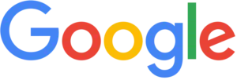
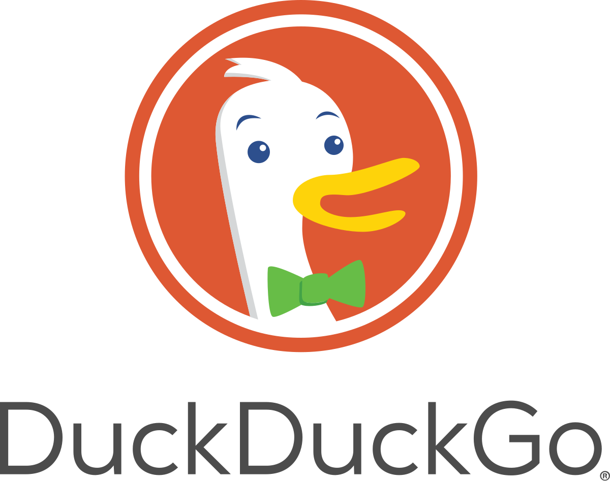

Título principal
En este artículo, cubrimos los conceptos básicos de HTML. Para empezar, este artículo define elementos, atributos y
todos los demás términos importantes que puedas haber escuchado. También explica dónde encajan en HTML. Aprenderás
cómo
se estructuran los elementos HTML, cómo se estructura una página HTML típica y otras características importantes del
lenguaje básico. ¡En el camino, también tendrás la oportunidad de jugar con HTML!
Requisitos previos: Conocimientos informáticos básicos, software básico instalado, y conocimientos básicos de
trabajar con archivos.
HTML (HyperText Markup Language, por sus siglas en inglés) es un lenguaje de marcado que indica a los navegadores
web
cómo estructurar las páginas web que visita. Puede ser tan complicado o tan simple como el desarrollador web quiera
que
sea. HTML consiste en una serie de elementos, que utiliza para encerrar, envolver o marcar diferentes partes del
contenido para que aparezca o actúe de cierta manera. Las etiquetas pueden convertir el contenido en un hipervínculo
para conectarse a otra página, poner palabras en cursiva, etc. Por ejemplo, considere la siguiente línea de texto:
Ahora trabajaremos con listas desordenadas
- elemento desordenado 1
- elemento desordenado 2
- elemento desordenado 3
Ahora trabajaremos con listas desordenadas y anidadas
- elemento desordenado 1
- elemento 1-1 anidado
- elemento 1-2 anidado
- elemento 1-3 anidado
- elemento desordenado 2
- elemento 2-1 anidado
- elemento 2-2 anidado
- elemento 2-3 anidado
- elemento desordenado 3
- elemento 3-1 anidado
- elemento 3-2 anidado
- elemento 3-3 anidado
Título h3 para enunciar que incluiré una imagen
Agregar un párrafo con los mismos enlaces asociados a las imagen de cada buscador
Google LLC es una empresa de tecnología
multinacional
estadounidense que se centra en
inteligencia artificial,
publicidad en línea, tecnología de motores de búsqueda, computación en la nube, software, computación cuántica,
comercio
electrónico y electrónica de consumo. Es una de las marcas más valiosas del mundo debido a su dominio del mercado,
recopilación de datos y ventajas tecnológicas en el campo de la inteligencia artificial.
Microsoft Bing (comúnmente conocido como
Bing) es un motor
de búsqueda web de Microsoft.
El servicio tiene su origen en
los anteriores motores de búsqueda de Microsoft: MSN Search, Windows Live Search y posteriormente Live Search.
DuckDuckGo Browser es un
navegador web centrado
en la privacidad que ha alcanzado
rápidamente una notable popularidad en
todo el mundo debido a su compromiso con la privacidad y la seguridad del usuario. Está diseñado desde cero para
potenciar la experiencia de navegación regular en Internet con una amplia gama de funciones centradas en la
seguridad
que permiten a los usuarios de todas las edades y niveles de conocimiento proporcionar la menor cantidad de huella
personal que pueden detectar los sitios web y los servicios en línea maliciosos que esforzarse por recopilar la
mayor
cantidad de información sobre los hábitos de navegación de los usuarios de Internet.